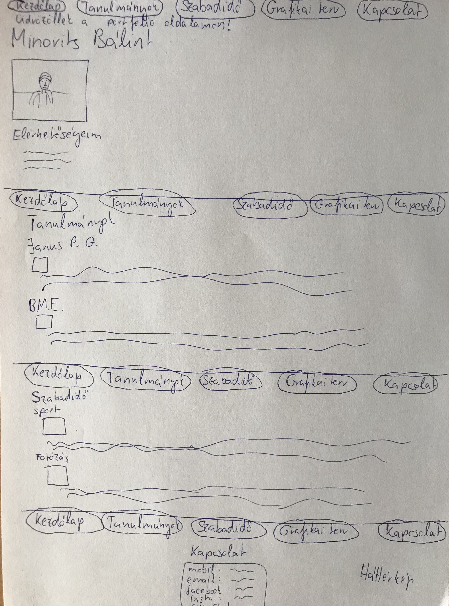

Grafikai terv
A portfólió elkészítése folyamán számomra a legnagyobb nehézséget az jelentette, hogy a kapott videóanyagból saját portfólió oldalt alkossak meg, a folyamat legelején teljesen tanácstalan voltam, hogy hogyan is állhatnék neki a projektemnek. Az idő előrehaladtával viszont egészen jól megértettem (a saját kompetenciáimhoz viszonyítva :) ) a programozás lényegét. Azonban a háttérkép beállításának problémakörével és az oldalak gombra kattintásra való megnyitásával eltöltöttem pár órát mire rájöttem hogyan is kell megvalósítani